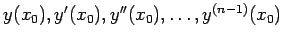
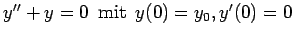
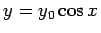

Werden der Lösung y =y(x) einer gewöhnlichen Differentialgleichung n-ter Ordnung an einer Stelle x0 die n Werte  vorgegeben, dann spricht man von einer Anfangswertaufgabe. Die vorgegebenen Werte werden als Anfangswerte oder Anfangsbedingungen bezeichnet. Sie führen auf n Gleichungen zur Bestimmung der n Konstanten  in der allgemeinen Lösung der Differentialgleichung n-ter Ordnung.
in der allgemeinen Lösung der Differentialgleichung n-ter Ordnung.
| Beispiel |
|
Die harmonische Schwingung eines speziellen elastischen Federpendels wird durch die folgene Anfangswertaufgabe beschrieben: . Lösung: . |